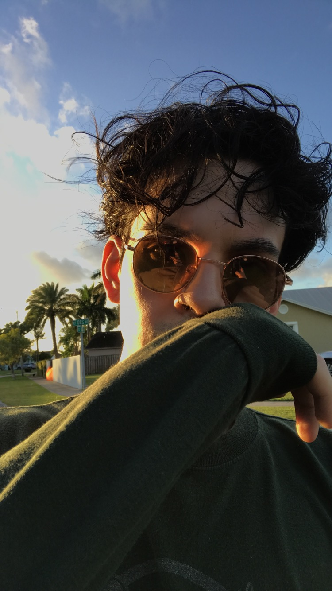

About Me
I was born January 26,1993 at eight-twenty-nine in the blitz cold morning, on a Tuesday in Suffolk County, NY at the old Southside Hospital. I was ready to take on my first day from the go!
My parents moved my younger sister, Michelle, me, and all of our humble beginnings to Miami in the summer of 1994. Growing up in sunny "North Cuba" (as the locals like to call it) was just as fun as you imagine. Sunny beaches, warm weather all year round tons of people to talk to, whatever cuisine you're in the mood for was just a walk or a short drive away. Here I spent all of my rugrat and teen years until 2011. I graduated high school that year with the highest level of honors... leaving emotionally sane.
In 2011 I moved to Charlotte and started studying at CPCC, first biology, then Chemistry, then...Photography, ...then Print Making...then Chemistry again. I like to think of myself as a Jack of All Trades, I know a fair amount if not a least a little about most subjects. I think it give's me a sharper edge to cut through the competitiion later in the job search rat race, after graduation.
I'm a big optimist and a chronic procrastinator, both qualities Steve Jobs had...which I repeat to myself in a daily mantra *wink*...we're working on the last part. I love to code becuse it gives me full control of my creative mind and sills. Ceating web pages and apps is just so cool to me, and I only want to keep exploring its expansive possiblities further and deeper.